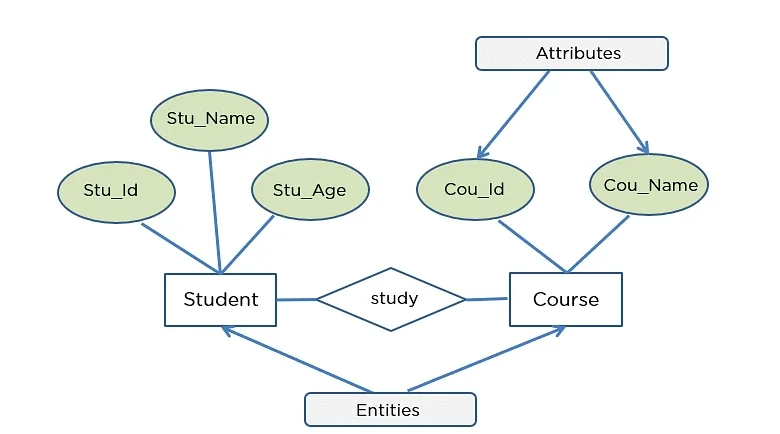
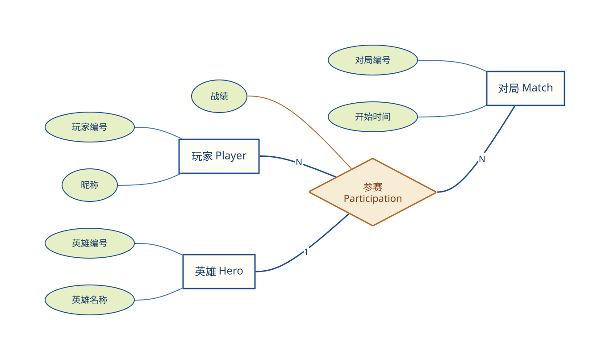
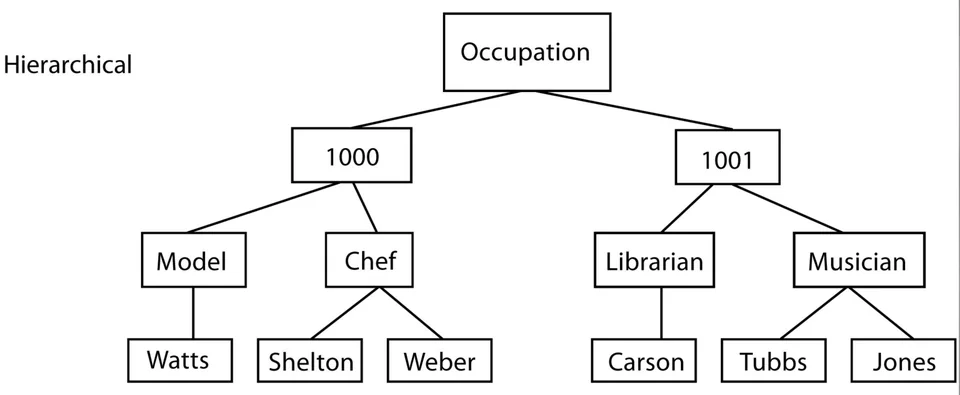
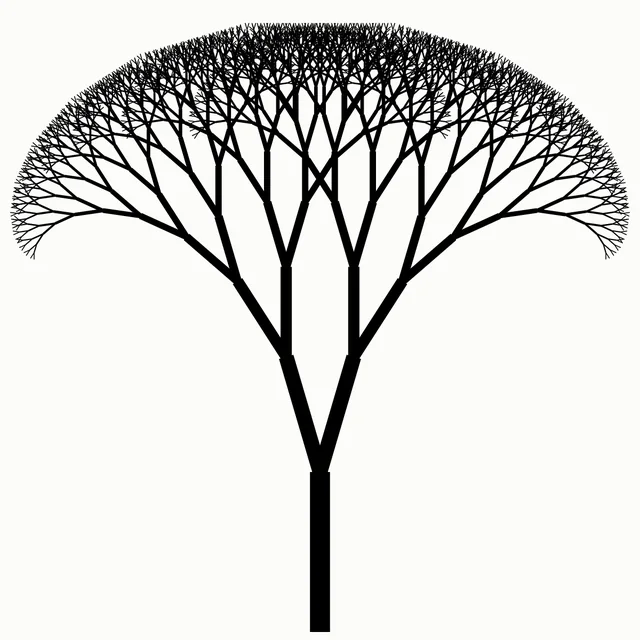
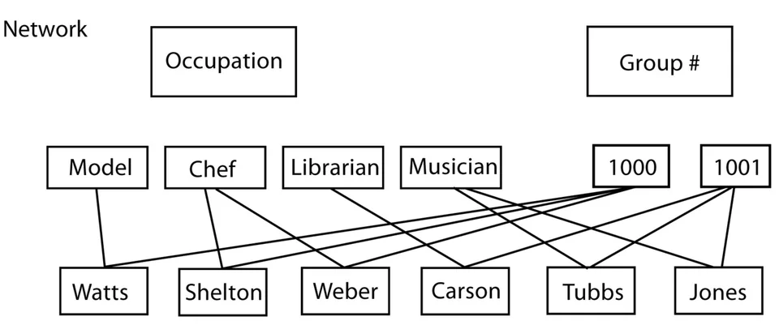
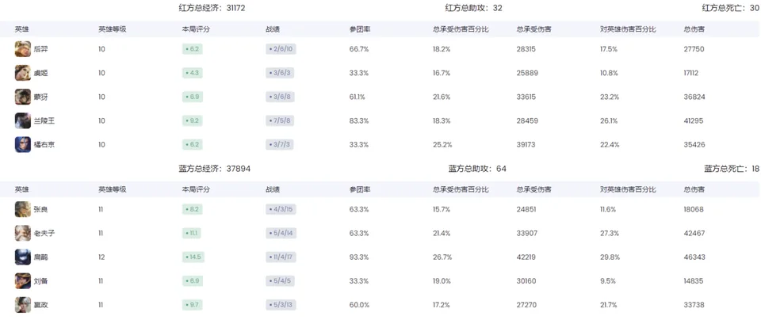
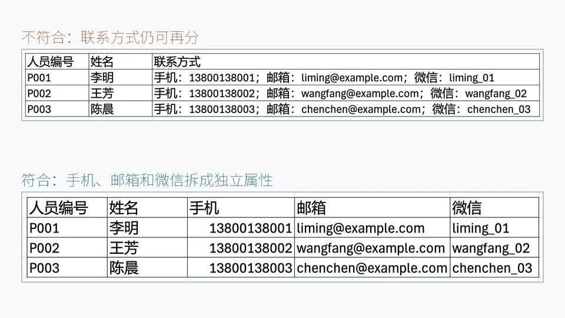
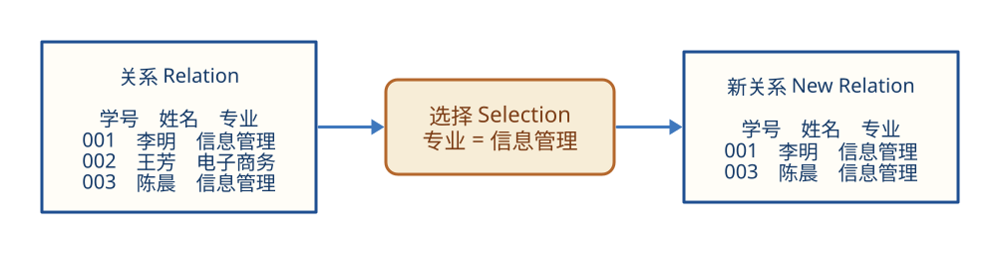

保留
导航地图保留道路走向、交叉关系和地标位置，帮助人们规划路线
从真实世界转向计算机世界
 VER. 2608
Built with impress.js
VER. 2608
Built with impress.js
实体和联系决定数据模型如何组织、操作和约束数据
同一对象用于不同目的时，往往需要保留不同特征
导航地图保留道路走向、交叉关系和地标位置，帮助人们规划路线
在只用于规划路线的地图中，建筑材料、窗户数量和行人衣着等信息可以省略
数据建模把现实对象及其联系抽象为 DBMS 支持的数据模型
| 数据模型的任务 | 回答的问题 | 游戏对局中的例子 |
|---|---|---|
| 描述数据 | 需要记录什么特征 | 玩家、英雄、对局、时间和战绩 |
| 组织数据 | 数据怎样关联 | 玩家参加对局，并在对局中使用英雄 |
| 操作数据 | 能够执行什么操作 | 查询玩家战绩或更新对局结果 |
数据模型组织经过抽象的数据，并规定可以对数据执行哪些操作
两个抽象阶段分别连接业务语义与数据库管理系统的实现
| 抽象阶段 | 关注点 | 学生选课中的结果 |
|---|---|---|
| 概念模型 | 业务对象与联系 | 学生、课程、选课联系及其成绩 |
| 数据模型 | DBMS 支持的数据结构 | Student、Course 和 SC 三个关系 |
概念模型表达业务语义，数据模型规定数据的组织和操作方式
概念模型明确需要管理的对象、属性和联系
表达业务中的对象、属性和联系
例如：订单明细记录商品、数量和成交价
用户和设计人员都能阅读并讨论
例如：业务人员能够读懂“玩家参加对局”
概念模型不依赖具体的数据库管理系统
例如：概念模型不决定数据库选型
讨论学生选课功能时，先明确“学生选修课程，选课记录包含成绩”的业务含义，不必立即决定细节
要管理的对象、属性和联系
客观存在并可相互区别的事物
实体具有的某一特性
唯一标识实体的属性集
用实体名和属性名集合描述一类实体
属于同一实体型的实体集合
不同实体型的实体之间或同实体型内部实体之间的联系
对象要有独立身份，且能够单独区分和管理，才适合作为实体
实体应可区分且可单独管理；实体型描述一类实体；实体集是具体实体的集合
| 概念 | 回答的问题 | 学生业务中的例子 |
|---|---|---|
| 实体 | 具体是谁 | 学号为 20260001 的李明 |
| 实体型 | 这一类怎样描述 | 学生（学号，姓名，专业，年级） |
| 实体集 | 这一类有哪些成员 | 学校当前登记的全体学生 |
“某游戏中的龙”、“该游戏中所有龙”、“游戏内部编号为 D017 的龙”
还要考虑取值是否稳定、可用
| 候选属性 | 是否唯一 | 是否稳定 | 判断 |
|---|---|---|---|
| 学号 | 学校要求唯一 | 在校期间稳定 | 适合作为码 |
| 姓名 | 可能出现同名 | 通常稳定 | 不能保证唯一 |
| 手机号 | 当前可能唯一 | 可能更换或缺失 | 不宜作为主要标识 |
码不能只看当前是否重复，还要考虑规则能否长期保证唯一
一端的一个实体最多可与另一端多少个实体建立联系
一个学生最多对应一张当前使用的校园卡，一张校园卡最多属于一个学生
一个学院可以包含多个专业，一个专业最多属于一个学院
一个学生可以选修多门课程，一门课程也可以由多个学生选修
同一个 1:n 联系反向读就是 n:1：班级 → 学生是 1:n，学生 → 班级是 n:1
阅读 E-R 图时，先识别实体型、属性和联系，再理解图形符号

矩形、椭圆和菱形分别表示实体型、属性和联系，基数标记表示联系基数
表示实体型，矩形中写实体型名
表示属性，连接到所属实体型或联系
表示联系，菱形中写联系名
标出 1:1、1:n 或 m:n 等联系基数
读 E-R 图时，先找实体型，再看属性，最后沿联系检查联系名称和基数
一次“参赛”联系关联一个玩家、一场对局和一个英雄，并带有战绩属性
玩家、对局、英雄
“参赛”
玩家端、对局端为 N，英雄端为 1；每个玩家在一场对局中对应一个英雄
战绩是“参赛”的属性

数据结构说明对象及联系，数据操纵规定操作及规则，完整性约束限定合法状态及变化
| 模型要素 | 回答的问题 | 订单业务中的例子 |
|---|---|---|
| 数据结构 Data Structure | 数据如何组织 | 用户、订单、商品和订单项怎样关联 |
| 数据操纵 Data Manipulation | 可以执行哪些操作 | 创建订单、查询订单、修改订单状态 |
| 完整性约束 Integrity Constraint | 哪些状态和变化合法 | 库存不能为负，订单属于某个用户 |
数据结构、数据操纵和完整性约束共同构成数据模型
判断每条描述属于数据结构、数据操纵还是完整性约束
每个非根结点只有一个双亲结点，适合表达一对多层级结构

子女记录依赖双亲记录；插入、更新、删除和查询通常沿路径进行
没有相应双亲记录时，不能直接插入子女记录
删除双亲记录会同时删除其全部子女记录
访问子女记录通常要沿双亲到子女的路径进行
若学院—专业—学生形成固定路径，学生记录就不能脱离专业记录独立存在
层级越接近树，层次模型越容易表达；多对多联系难以自然表示
结构简单清晰
沿固定路径访问时效率较高
父子层级约束明确
难以自然表达多对多和多双亲联系
应用程序依赖访问路径

允许结点有多个双亲，能更直接地表达复杂联系

沿明确路径访问数据时效率较高，但应用程序需要选择存取路径
能够直接表示多个双亲结点和多种联系
沿明确路径存取时效率较高
数据定义语言和数据操纵语言复杂
应用程序需要选择具体存取路径
两种模型都用记录之间的联系组织数据，但结构不同
| 比较维度 | 层次模型 | 网状模型 |
|---|---|---|
| 结构直觉 | 有根树 | 网状结构 |
| 双亲数量 | 非根结点只有一个双亲 | 一个结点可以有多个双亲 |
| 复杂联系 | 表达笨拙 | 表达更直接 |
| 使用代价 | 路径固定 | 路径选择更复杂 |
层次模型适合结构稳定的场景，网状模型适合联系复杂的场景
用统一的关系结构组织数据，用户只需说明所需操作
Edgar F. Codd 提出数据库系统的关系模型
用严格数学概念描述关系
用户只需要说明要做什么
数据库管理系统决定如何查找
关系必须满足规范化要求，例如每个分量都应是不可分的数据项

具有相同属性结构的一组元组，通常表示为规范化二维表
表中的一行
表中的一列
元组中的一个属性值
如何唯一标识元组、属性可以取哪些值、关系的结构是怎样的
| 术语 | 作用 | Student 关系中的例子 |
|---|---|---|
| 码 Key | 唯一确定一个元组 | Sno 学号 |
| 域 Domain | 限定属性的取值范围 | Smajor 的取值范围是学生所在学院设置的专业名称集合 |
| 关系模式 Relation Schema | 描述关系名和属性结构 | Student（Sno，Sname，Smajor） |
“关系模式”描述关系的结构，而“关系”是该结构在某一时刻的元组集合
每个分量都必须是在当前关系语义下不可再分的原子数据项

每个属性值只包含一个不可再分的数据项
用户说明要做什么，数据库管理系统负责实现

查询、插入、删除和修改都以关系为对象
关系运算的结果依然是关系；插入、删除、修改会改变关系中的元组
用户说明做什么，DBMS 决定如何访问关系中的数据
存取路径“对用户透明”：用户看不到实际存取路径
统一关系结构和数据独立性，减少了用户对底层实现的依赖
关系、运算和约束都有严格定义
用统一的关系组织数据；复合信息需要拆分到多个关系
对用户透明；DBMS 负责选择和优化
根据数据产生方式、关联方式以及最常见的查询方式选择合适模型
快速查找缓存、会话和购物车
保存字段结构和数量可变的半结构化详情和文档
表达社交关系、知识图谱以及路径与关联分析
处理按时间持续产生的股票行情和监控数据
处理车辆轨迹、位置变化和地图分析
在关系模型上扩展复杂数据类型
不同业务需求会影响数据结构、查询方式和适用的数据模型
模型选择取决于具体数据和操作需求
| 电商数据 | 初步模型选择 | 主要判断依据 |
|---|---|---|
| 订单与支付 | 关系模型 | 结构稳定且事务约束明确 |
| 商品详情 | 文档模型 | 不同类别的字段差异较大 |
| 用户会话 | 键值模型 | 需要按键快速读写 |
| 物流轨迹 | 时序或时空模型 | 位置随时间持续变化 |
| 商品关联 | 图模型 | 关注多跳关系和路径 |
一个系统可以组合多种模型，选择时要看数据形态、主要操作和约束要求
数据建模把现实世界抽象为概念模型，再转换为具体数据模型
把现实世界抽象为用户能够理解的概念模型
用实体、属性、码、联系和 E-R 图组织语义
用数据结构、数据操纵和完整性约束描述数据模型
根据数据形态、主要操作和约束要求选择关系模型或其他数据模型